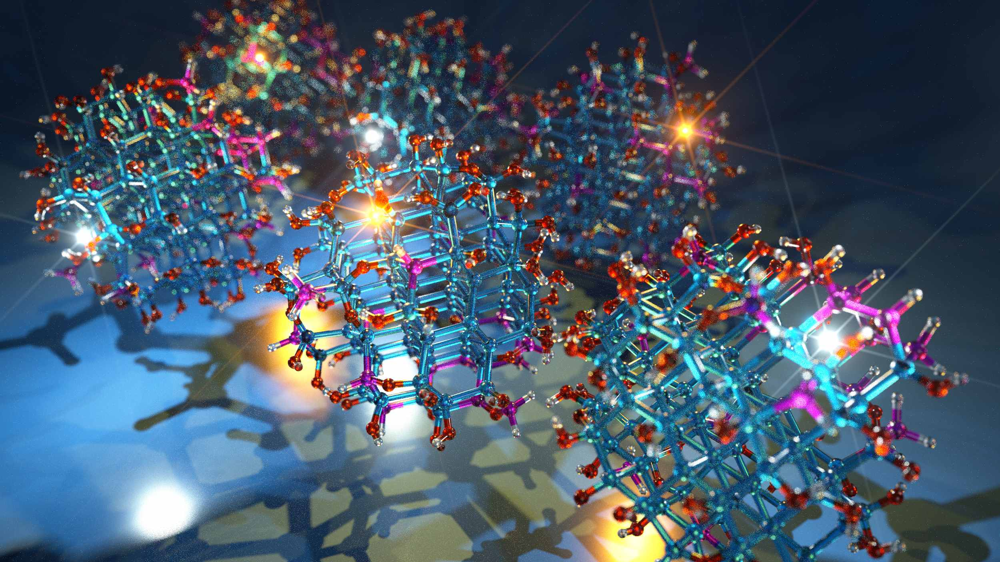
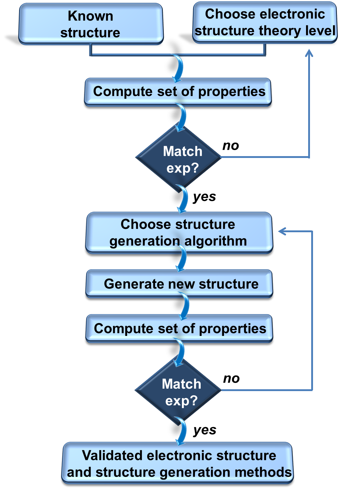

	
    <!-- Page Content -->
    <div class="container">

        <!-- Page Heading-->
        <div class="row">
            <div class="col-lg-12">
                <h1 class="page-header">Validation</h1>
            </div>
        </div>
        <!-- /.row -->

        <!-- Row -->
        <div class="row">
            <div class="col-sm-5">
                <p><strong>Four major areas</strong> were chosen:</p>
				<ul>
				    <li><a href="SNP.html">Semiconducting Nanoparticles</a></li>
					<li><a href="THM.html">Thermoelectric Materials</a></li>
					<li><a href="NEM.html">Liquid Crystals</a></li>
					<li><a href="SH2O.html">Solid/Water Interfaces</a></li>
				</ul>
				<br>
				<br>
            </div>
            <div class="col-sm-7">
				
            </div>			
        </div>
        <!-- /.row -->

<!--         <div class="row">
            <div class="col-sm-7">
                <p>MICCoM validation activities target two classes of systems:</p>
				<ul class="big-list">
				    <li><strong>Systems for which well established dta are available in the literature</strong>, with the following goals:</li>
						<ol class="big-list">
							<li> Validate exchange-correlation functionals, excited states and transport calculations carried out at the quantum level (with the <a href="http://qboxcode.org" target="_blank">Qbox</a> and <a href="http://www.west-code.org" target="_blank">WEST</a> codes) for bulk systems for which results are well established</li>
							<li> Validate assembly procedures (with the <a href="http://ime-code.uchicago.edu" target="_blank">SSAGES</a> and <a href="http://ime-code.uchicago.edu" target="_blank">COPSS</a> codes) e.g. reaction and interconversion pathways in colloid and nanoparticle clusters.</li>
						</ol>
					<li><strong>Complex heterogeneous systems</strong> e.g. ensemble of nanoparticles, multiphase compounds and solid-liquid interfaces. In these systems the validation strategy includes the following steps: </li>
						<ol class="big-list">
							<li> Validate first principles theoretical frameworks for systems with known atomic structure (e.g. well-defined crystals) using the <a href="http://qboxcode.org" target="_blank">Qbox</a> and <a href="http://www.west-code.org" target="_blank">WEST</a> codes</li>
							<li> Test structural configurations derived from simulations at the best level of electronic structure theory determined in (1) and generated using methods of the <a href="http://ime-code.uchicago.edu" target="_blank">SSAGES</a> and <a href="http://ime-code.uchicago.edu" target="_blank">COPSS</a> codes</li>
							<li>Validate the <a href="http://qboxcode.org" target="_blank">Qbox</a> and <a href="http://www.west-code.org" target="_blank">WEST</a> calculations of transport and dynamical properties of atomically controlled, heterogeneous systems through appropriate measurements.</li>
						</ol>					
				</ul>
            </div>
            <div class="col-sm-5">
				
	 
            </div>			
        </div> -->
		
    </div>
    <!-- /.container -->